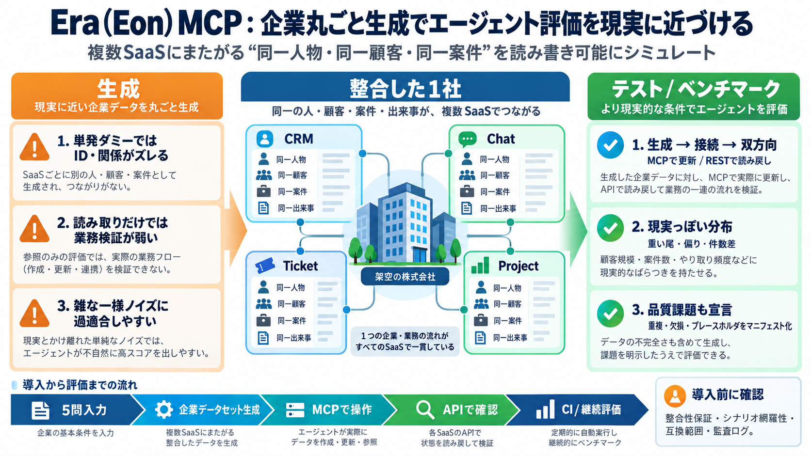

Generating a Consistent Enterprise with Era by Eon: Synthesis and Reference-Free Evaluation of Multi-System Business Data
The generator and the simulators are available as a hosted service, Era by Eon, at (Eon, 2026). A user describes a comp…

The generator and the simulators are available as a hosted service, Era by Eon, at (Eon, 2026). A user describes a comp…
MCP and REST APIs with realistic rate limits, pagination and error codes › Reset the same company and rerun identical ta…
Eon plugs into the AI and analytics tools you already use — Claude, Gemini, Databricks, Snowflake, your own agents — thr…
A key feature of this MCP server is the ability to not only manage the lifecycle of sandboxes (creating, terminating, ex…
Aug 21, 2026 How Multi-Cloud Backup and Recovery Became the Most Interesting Problem in Infrastructure Aug 21, 2026 M…